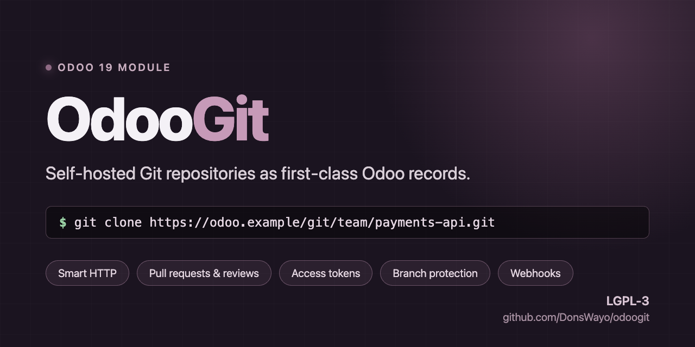
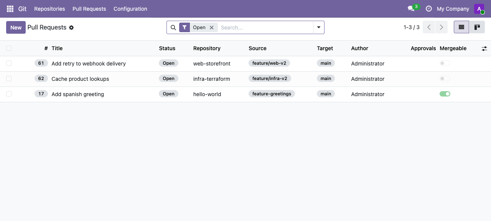
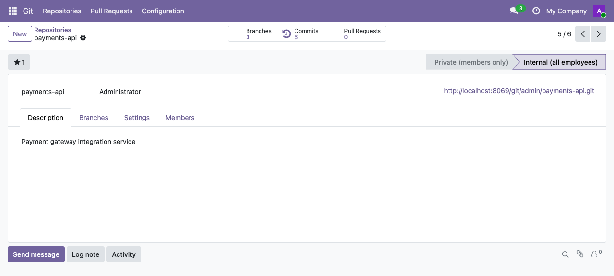

Repositories your team already has access to
Visibility is private (members only) or internal (all employees). Access is decided by Odoo record rules, so a repository obeys the same permission model as the rest of your database.

Self-hosted Git repositories as first-class Odoo records. Real bare repositories on disk, served over Git Smart HTTP, with pull requests, reviews, access tokens and webhooks wired into Odoo's own users, groups and record rules.

Every repository is a real bare Git repository. Developers clone and push over HTTPS with a token they generate themselves — no shell accounts, no SSH keys to distribute.
git clone https://alice:<token>@your-odoo/git/alice/payments-api.git
A push syncs branches and commits straight back into Odoo, so the records you see always reflect what is on disk.
Visibility is private (members only) or internal (all employees). Access is decided by Odoo record rules, so a repository obeys the same permission model as the rest of your database.
Draft to open to merged, with merge, squash or rebase strategies. Conflicts are detected against the real repository, a "request changes" review blocks the merge, and protected branches can require a number of approvals before anyone can complete one.

Branches with protection settings, synced commit history, members, clone URLs and full chatter — discussions and activities on the repository itself, like any other Odoo document.

OdooGit is honest about what it does not do yet. Webhook payloads are
built and signed but not delivered — there is no delivery
worker. There is no SSH transport; only HTTPS. Branch
protection is enforced on merges performed in Odoo, not on
git push.
The full list ships with the module in
docs/LIMITATIONS.md.
git binary on the serverGitPython (pip install GitPython)
130 automated tests: unit tests, integration tests against the real
git binary, HTTP tests of every endpoint, and an
end-to-end suite that clones over HTTP with a token, pushes a commit,
opens a pull request and merges it — then checks the bare repository
on disk agrees.
Licensed LGPL-3, the same as Odoo.